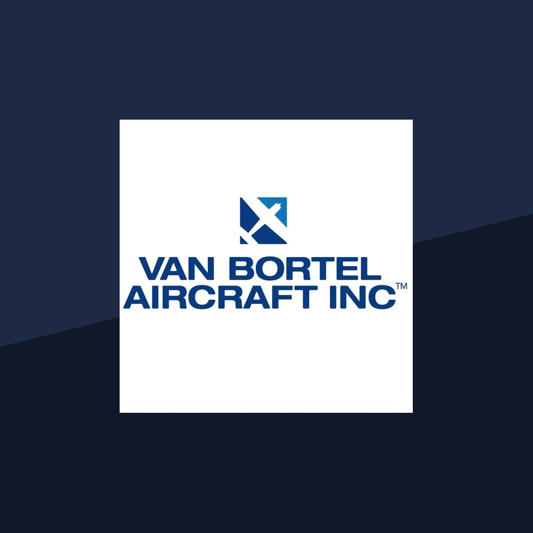

Learn More
The company began as a modest card-table startup and went on to become the world's most recognized Cessna dealer.

The Beginning
Howard G. Van Bortel discovered a passion for aviation after learning to fly in a Cessna 150 on a grass airstrip in Upstate New York in 1975. That experience laid the foundation for a lifelong career in general aviation. A decade later, in 1985, he founded Van Bortel Aircraft with just $1,000 in capital and a card table set up in his sister's living room.
Drawing on more than 30 years of hands-on experience in general aviation, Howard built the company around two unwavering principles: offering only the highest-quality Cessna aircraft and delivering an exceptional customer experience. That commitment to quality, integrity, and customer service transformed a modest $1,000 investment into what is now recognized as the world's most trusted, respected, and recognized Cessna dealer.
Growth
By 1997, Van Bortel Aircraft's service center had established a reputation for exceptional workmanship, earning designation as a Propjet Service Center by Cessna Aircraft Company—one of only ten facilities in the United States to receive this recognition at the time. The achievement reflected years of consistent, high-quality maintenance and service for Cessna aircraft owners.
As demand continued to grow, Van Bortel Aircraft expanded its presence at Arlington Municipal Airport by acquiring additional hangars in 2000, 2006, and 2012. These expansions enabled the company to better serve a growing customer base from across the country. Today, Van Bortel Aircraft operates as an FAA Authorized Repair Station (Certificate #VNFR171L), a designation it has maintained for more than three decades.
Financing
In 2010, Van Bortel Aircraft established Van Bortel Finance Corporation to provide in-house financing solutions for Cessna and general aviation aircraft purchases. The new division was created to simplify the buying process by offering customers financing through a team with extensive knowledge of both the aircraft and the aviation industry.
Within two years, Van Bortel Finance Corporation had financed more than $30 million in Cessna aircraft purchases. The addition of in-house financing further strengthened Van Bortel Aircraft's comprehensive customer experience, giving buyers access to knowledgeable financing professionals who understand the unique requirements of aircraft ownership and acquisition.
What We Believe
Van Bortel Aircraft's culture is built on three guiding principles established by founder Howard G. Van Bortel in 1985: treating customers, vendors, and employees with respect, fostering trust through integrity, and making decisions with a long-term perspective. These values continue to shape the company's approach to customer service and business operations.
This long-term philosophy influences every aspect of the business, from the thorough inspection of aircraft before sale to the lasting relationships the company maintains with customers long after their purchase. It also reflects the company's commitment to helping buyers make informed ownership decisions, including understanding how aircraft ownership can change the way they travel for years to come, rather than focusing solely on the transaction itself.
Recognition
Van Bortel Aircraft has earned Cessna's highest honors, including the #1 CSTAR Award in the Nation, the Heavy Hauler Award, Most Skyhawks Sold, Most Skylanes Sold, the Rising Star Award, and the Parts Volume Achievement Award. The company is also an FAA-approved avionics shop recognized for delivering high-quality workmanship and technical expertise.
While these awards reflect decades of excellence, Van Bortel Aircraft remains focused on the principles that have guided the company since its founding. As a Cessna Authorized Single, Multi, and PropJet Service Center specializing in Independence-built Cessna aircraft, the company continues to help customers choose the Cessna that best fits their mission, providing expert guidance and long-term support throughout the ownership journey.